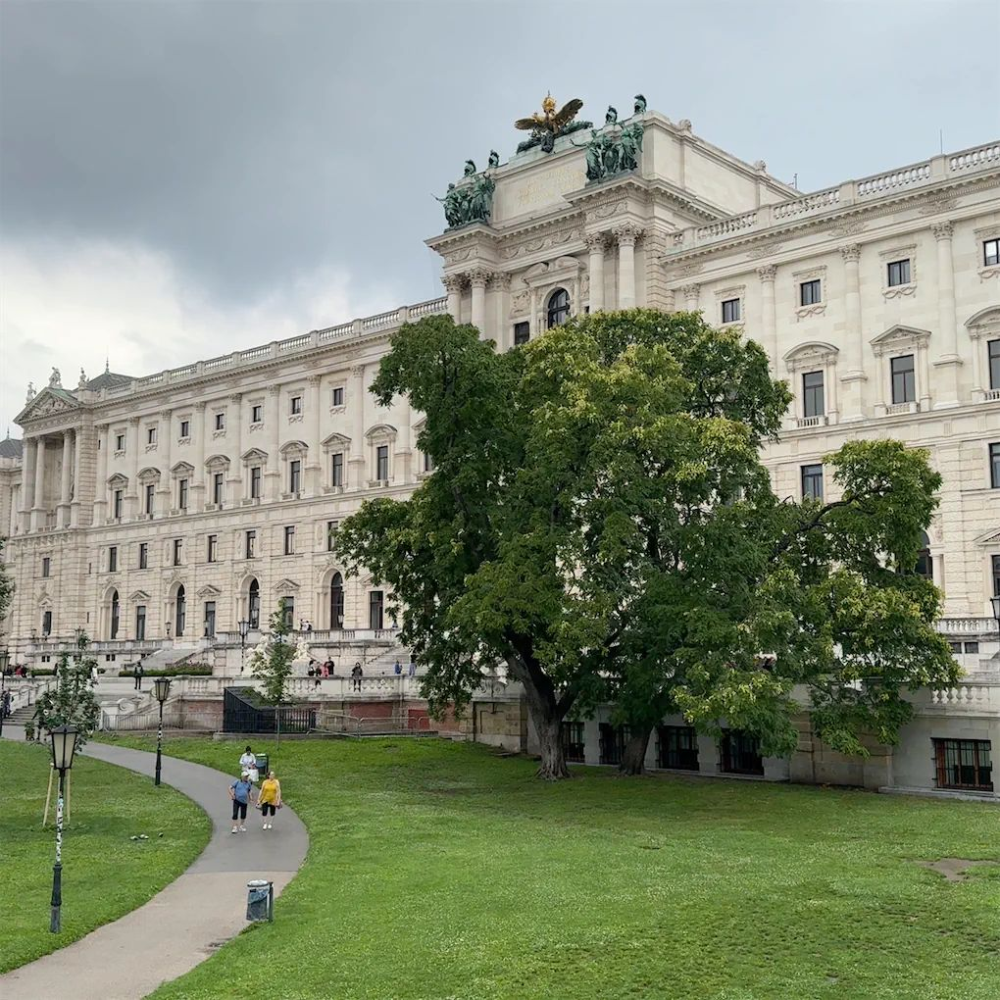
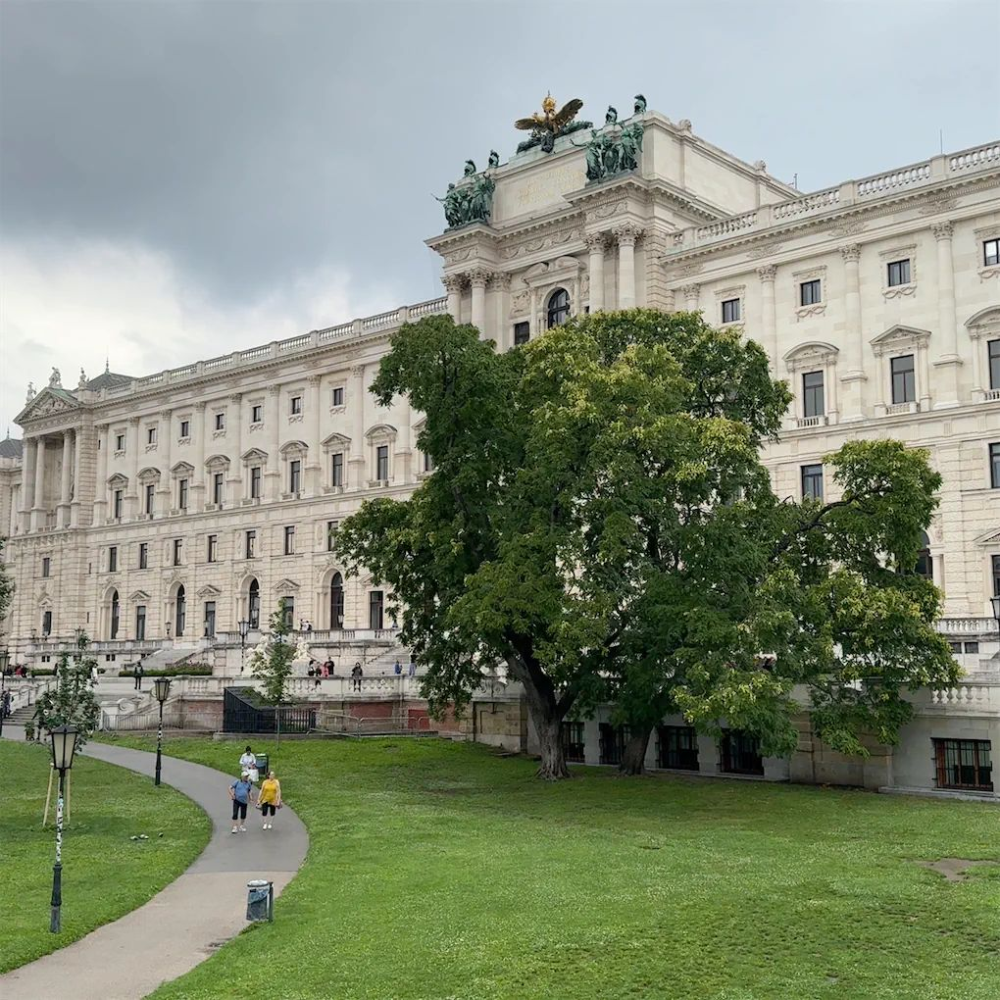
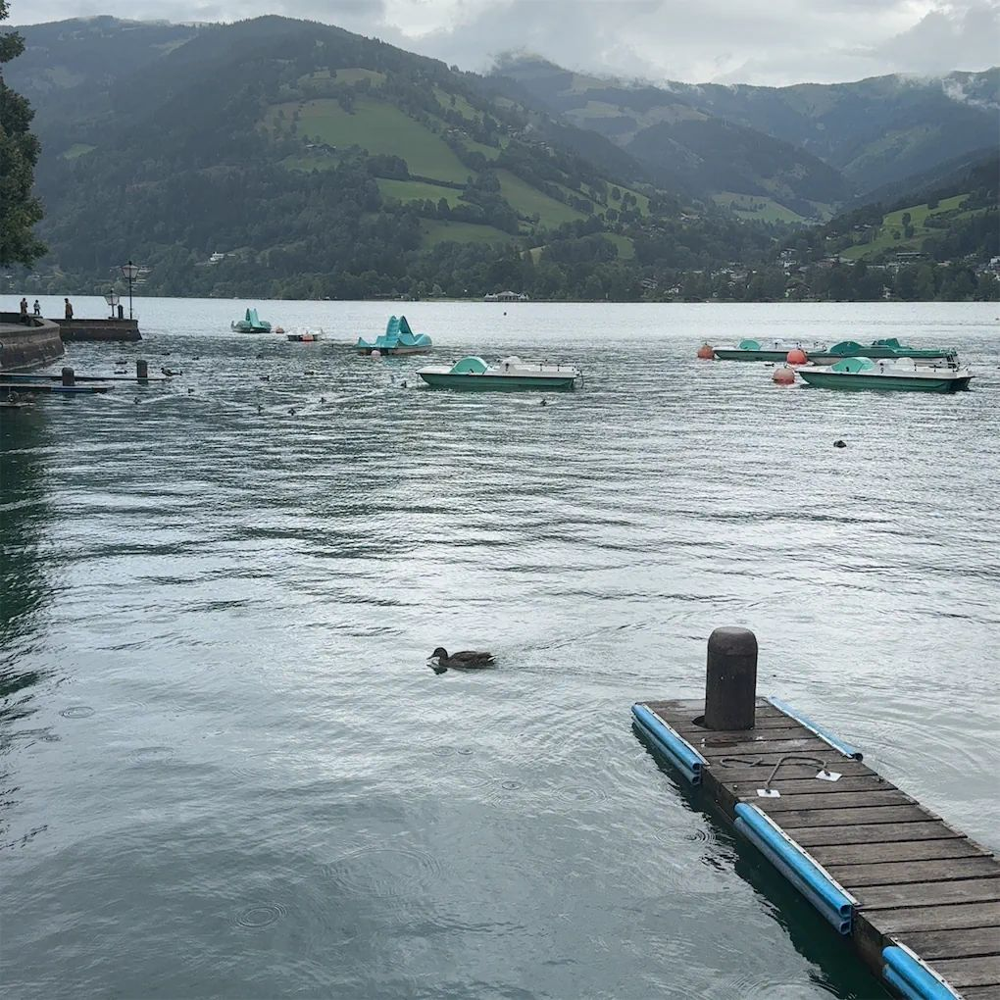
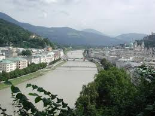

My trip to Austria was truly unforgettable! I explored four amazing cities, each with its own charm — a perfect mix of history, nature, and European beauty.
My trip began in Vienna, the elegant capital of Austria. I visited the magnificent Votivkirche Church, known for its tall Gothic towers and detailed stone carvings. Later, I explored the grand Hofburg Palace, once home to Austrian emperors, surrounded by peaceful gardens and beautiful architecture.
 

In Zell am See and Kaprun, I enjoyed breathtaking views of the Alps and the peaceful Lake Zell. The mountains were covered in green, and the calm water reflected the sky beautifully. It was the perfect place to relax, take a boat ride, and feel close to nature.
My final stop was Salzburg, the charming city of music and Mozart’s birthplace. I walked through its old streets, listened to street performers, and admired the view from Hohensalzburg Fortress. It was the perfect ending to my journey across Austria.
Visiting Austria was an unforgettable experience — full of music, history, and nature. Each city had its own story, and I hope to return one day to explore even more.
| City | Main Attraction | My Favorite Moment |
|---|---|---|
| Vienna | Votivkirche & Hofburg Palace | Exploring the old streets |
| Zell am See | Lake Zell | Watching the sunset by the lake |
| Mayrhofen | Zillertal Valley | Walking in the green hills |
| Salzburg | Hohensalzburg Fortress | Listening to street music |
Let's stay in touch! If you'd like to share your travel experiences or ask about my trip, feel free to contact me below!